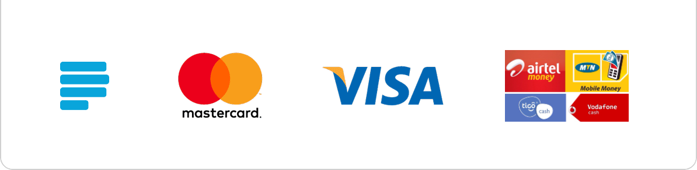
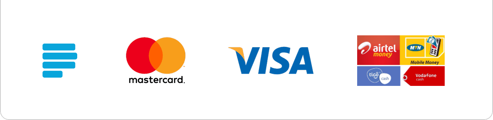

Support Our Ministry
Why Your Donations Matter
Your generous donations enable us to continue our mission of spreading the teachings of Jesus Christ, supporting our community, and reaching out to those in need. Every contribution helps us to fund various church programs, maintain our facilities, and support our ministry teams.
How Your Donations Are Used
- Community Outreach: We use donations to support our outreach programs, which include feeding the hungry, providing clothing and shelter, and offering educational support.
- Church Maintenance: Your contributions help us maintain and improve our church facilities, ensuring a welcoming environment for all.
- Ministry Support: Donations fund our various ministries, such as the Youth Ministry, Women's Fellowship, and Men’s Fellowship, enabling them to continue their vital work.
- Missionary Work: We also allocate funds to support missionaries and their work in spreading the gospel across the world.
Are You Ready to Make a Difference Today?
Imagine the impact of your generosity on those in need. Your support can transform lives and bring hope where it's most needed. Don't wait—be a beacon of light and support our mission now.
Donate Online
We have made it easy for you to contribute online. Simply click the button below to make a secure donation through our integrated payment systems.

 

Donate Offline
If you prefer to donate offline, here are the ways you can do so:
- In-Person: You can make a donation during our weekly services. Look for the donation box in the church lobby or hand it directly to our ushers.
- Mail: You can send a check or money order to our church office at the following address:
123 Church Street
Sekondi-Takoradi, Ghana